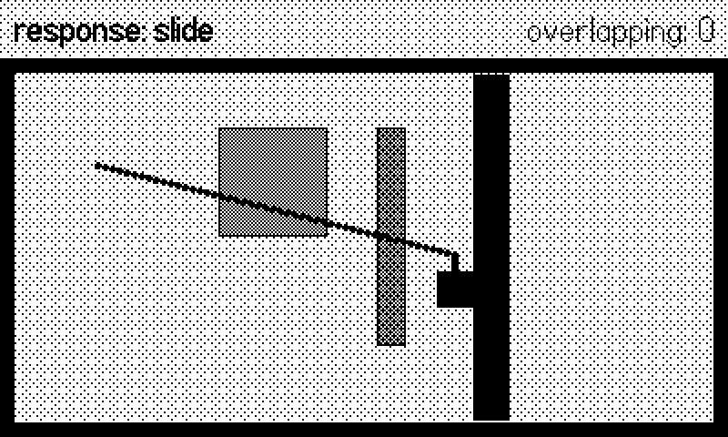
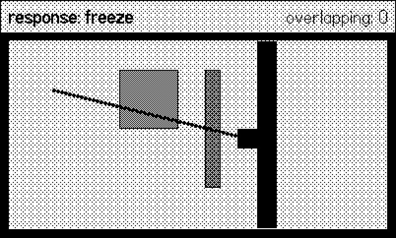
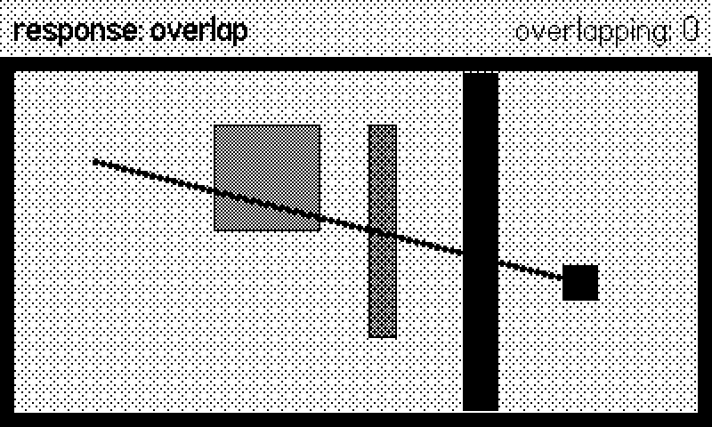
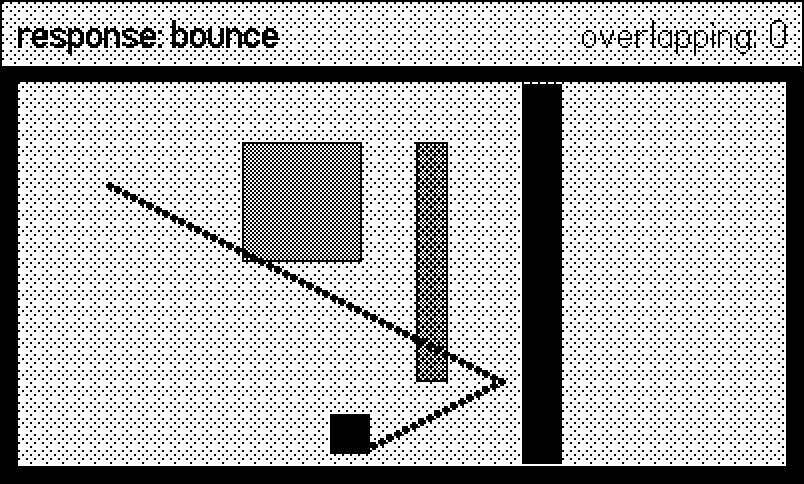

6 The Sprite System
The last two chapters drew everything by hand, every frame: clear, draw world, draw actors, draw HUD. The SDK offers a second, retained-mode way to put things on screen — playdate.graphics.sprite. You create sprite objects, give each an image and a position, add() them to a global display list, and call one function per frame; the system tracks what moved, redraws only the damaged patches of screen, and — the real prize — resolves collisions for you with a purpose-built moveWithCollisions that never lets fast movers tunnel through walls.
This chapter gives the sprite system full, fair coverage, built around a collision playground you can steer by hand or let the figure script drive: a player square pushed diagonally into walls and sensors while the four collision response types — slide, freeze, overlap, bounce — take turns deciding what contact means. The figures are the trails it leaves. First, though, a disclosure.
Honesty requires saying it plainly: of the sixty-odd shipped games this book draws on, essentially none use gfx.sprite. They are immediate-mode renderers — clear, draw in explicit order, repeat — for three reasons. First, dirty-rect bookkeeping stops paying when most of the screen changes anyway: scrolling worlds, full-screen procedural art, and starfields damage everything every frame, so “redraw only what changed” means “redraw everything, plus overhead”. Second, draw order as code (world, then actors, then effects, then HUD, in the order the lines appear) turned out easier to reason about than z-indexes spread across object constructors. Third, their collision needs were grid- or circle-shaped and a dozen lines each.
None of that makes sprites wrong. For a game with dozens of mostly-static UI cards, or discrete moving actors on a stable background — puzzle boards, tower defense, anything Zelda-shaped — the dirty-rect model is a genuine performance win on this CPU, and moveWithCollisions is flatly better than a first attempt at AABB physics. Learn both; choose per game.
6.1 The sprite lifecycle
A sprite is created, dressed, placed, and added:
import "CoreLibs/sprites"
local s = gfx.sprite.new(image) -- or sprite.new() + setImage
s:setZIndex(10)
s:moveTo(200, 120)
s:add() -- now the system owns drawing itFrom then on one call in your update draws everything:
function playdate.update()
gfx.sprite.update() -- moves, redraws, all sprites
endgfx.sprite.update() (the class function — do not confuse it with the per-sprite :update() callback it invokes on each sprite) is the engine’s heartbeat. Forget it and the screen simply never changes; call it twice and you pay double. A sprite leaves the screen with :remove(), or temporarily with :setVisible(false); :moveTo(x, y) and :moveBy(dx, dy) reposition it — positions refer to the sprite’s center by default, adjustable with :setCenter(ax, ay) (fractions, so 0, 0 means top-left). Stacking order is :setZIndex(z), higher in front.
The playground builds its arena — walls, a sensor zone, a ghost wall we will get to — entirely from one boxSprite helper that draws a rect into an image (Chapter 5) and hangs a sprite on it:
function Playground.setup()
-- arena walls and the center wall: group 1
local walls = {
{ 200, 36, 400, 8 }, -- top
{ 200, 236, 400, 8 }, -- bottom
{ 4, 136, 8, 200 }, -- left
{ 396, 136, 8, 200 }, -- right
{ 270, 136, 20, 190 }, -- the test wall
}
for _, w in ipairs(walls) do
local s = boxSprite(w[3], w[4], true)
s:setGroups({ 1 })
s:setTag(TAG_WALL)
s:moveTo(w[1], w[2])
s:add()
end
-- the sensor zone: group 2, never solid (see the response
-- function below), reported through overlaps instead
local sensor = boxSprite(60, 60, false)
sensor:setGroups({ 2 })
sensor:setTag(TAG_SENSOR)
sensor:moveTo(150, 100)
sensor:add()
-- the ghost wall: group 3. The player's mask only covers
-- groups 1 and 2, so this one is invisible to its physics.
local ghost = boxSprite(16, 120, false)
ghost:setGroups({ 3 })
ghost:moveTo(215, 130)
ghost:add()
Playground.buildPlayer()
end6.2 The dirty-rect redraw model
The reason retained mode exists: gfx.sprite.update() does not clear and redraw the screen. It maintains a list of dirty rectangles — patches damaged by sprites that moved, changed image, or changed z — and repaints only those, compositing the sprites that intersect them in z order. A screen of forty static sprites costs almost nothing per frame; that is the whole pitch.
Two consequences follow. First, the background needs to participate: when a sprite moves off a patch, something must repaint what was under it. That is gfx.sprite.setBackgroundDrawingCallback:
gfx.sprite.setBackgroundDrawingCallback(function(x, y, w, h)
-- only the dirty rect (x,y,w,h) needs repainting; drawing it
-- all is correct too, just slower
gfx.setDitherPattern(0.9, gfx.image.kDitherTypeBayer8x8)
gfx.fillRect(x, y, w, h)
end)The callback receives the damaged rect; drawing just that region is the optimization, drawing the whole background and letting the clip rect trim it is the lazy correct version.
Second, anything you draw outside the sprite system — our debug trail dots, immediate-mode HUD text — is invisible to the bookkeeping: sprites repaint over it only where rects happen to be dirty, leaving stale smears elsewhere. The playground’s overlay solves it bluntly by declaring the whole screen dirty each frame with gfx.sprite.addDirtyRect(0, 0, 400, 240), which is also your escape hatch whenever mixed rendering misbehaves — correctness first, then shrink the rect:
-- Debug overlay, drawn immediate-mode after sprite.update(). We
-- dirty the whole screen each frame so the sprite system repaints
-- under it; a real game would keep this to a HUD strip.
function Playground.overlay()
gfx.sprite.addDirtyRect(0, 0, 400, 240)
gfx.setColor(gfx.kColorBlack)
for _, p in ipairs(Playground.trail) do
gfx.fillCircleAtPoint(p[1], p[2], 2)
end
local overlaps = player:overlappingSprites()
gfx.drawText("*response: " .. NAMES[Playground.mode] .. "*",
8, 8)
gfx.drawTextAligned("overlapping: " .. #overlaps, 392, 8,
kTextAlignment.right)
end(Yes: dirtying everything every frame surrenders the dirty-rect advantage — see the sidebar above. A shipping sprite game would confine the overlay to a HUD strip and dirty only that.)
6.3 Collisions: the rect, the move, the response
Three calls turn sprites into a physics layer. One, :setCollideRect(x, y, w, h) gives the sprite a collision box in its own coordinate space (offsets from its top-left — not world coordinates). No collide rect, no collisions: sprites without one are scenery. Two, instead of :moveTo, move with:
local ax, ay, cols, n = s:moveWithCollisions(goalX, goalY)The sprite travels toward the goal but stops, slides, or bounces according to what it hits; it lands at (ax, ay), and cols is an array of n collision records. Each record carries .other (the sprite hit), .type (the response applied), .normal (the surface normal as a vector — which face you hit), .touch (the contact point), and more. The sweep is continuous: a 20-pixel move into a 2-pixel wall hits the wall; it does not teleport past it. That freedom from tunneling is the single biggest thing you give up by writing naive x = x + dx physics.
Three, the collision response, decided per pair of sprites by overriding :collisionResponse:
function Playground.buildPlayer()
player = boxSprite(20, 20, true)
player:setCollidesWithGroups({ 1, 2 })
player:setZIndex(10)
player:moveTo(50, 90)
player:add()
-- called by moveWithCollisions for each candidate overlap
function player:collisionResponse(other)
if other:getTag() == TAG_SENSOR then
return gfx.sprite.kCollisionTypeOverlap
end
return MODES[Playground.mode]
end
endThe function is consulted for each candidate other; returning one of four constants sets the physics of that contact. The playground cycles the constant it returns for walls (that is MODES[Playground.mode]), which is the whole trick behind the four figures below — one code path, four physical worlds. The SDK’s own arrow-collisions sample is built on exactly the same cycling idea:
-- PlaydateSDKArrowCollisionsExample/source/main.lua:13
local arrowResponses = {'freeze', 'slide', 'bounce', 'overlap'}(Response values may be given as those strings, too; the book uses the constants for greppability.)
6.3.1 The four responses, on the record
The driving code is shared — the script shoves the player diagonally (right and slightly down) into the black wall for 75 frames per phase, leaving a dot every frame:
function Playground.move(dx, dy)
local goalX, goalY
if NAMES[Playground.mode] == "bounce" then
goalX = player.x + Playground.vx
goalY = player.y + Playground.vy
else
goalX, goalY = player.x + dx, player.y + dy
end
local ax, ay, cols, n = player:moveWithCollisions(goalX, goalY)
for i = 1, n do
local c = cols[i]
if c.type == gfx.sprite.kCollisionTypeBounce then
-- keep moving: reflect velocity off the hit normal
if c.normal.x ~= 0 then
Playground.vx = -Playground.vx
end
if c.normal.y ~= 0 then
Playground.vy = -Playground.vy
end
Harness.count("bounces")
elseif c.other:getTag() == TAG_SENSOR then
Harness.count("sensorTouches")
end
end
local t = Playground.trail
t[#t + 1] = { player.x, player.y }
endSlide (gfx.sprite.kCollisionTypeSlide) — motion along the blocked axis stops, the rest continues. The trail hits the wall and smears down its face: the platformer response, the reason walking into a wall while falling still means falling.

Freeze (kCollisionTypeFreeze) — the sprite stops dead at first contact, both axes. The trail ends at the wall. Right for arrows thunking into targets, pieces snapping against a stack.

Overlap (kCollisionTypeOverlap) — no physics at all, but the contact is still reported in cols. The trail sails through the wall as if it were fog. This is the sensor response: pickups, damage zones, goal triggers.

Bounce (kCollisionTypeBounce) — the movement reflects off the surface. One subtlety the figure makes visible: bounce reflects this move, not your velocity variable. If you keep adding vx every frame you will drive back into the wall and jitter; on each bounce record, flip the velocity component along c.normal, as the move listing above does. The trail shows the resulting clean V off the wall (and a second V off the arena floor).

Notice in all four figures: the sensor zone reported the pass (the “overlapping” counter ticks while the player crosses it) without ever deflecting the player, because collisionResponse returns overlap for anything tagged as a sensor before the mode is even consulted. Per-pair responses are the norm in real games, and :setTag(n) / :getTag() (small integers you assign) is the cheap way to sort sprites into kinds without a class hierarchy.
6.4 Groups and masks: who can touch whom
collisionResponse decides how contact resolves; groups decide whether contact is considered at all. Every sprite can belong to up to 32 groups (:setGroups({1, 3})) and declares which groups it collides with (:setCollidesWithGroups({1, 2})). If the mover’s mask and the target’s groups share no bit, the pair is skipped: no response function called, no collision record, no cost. (Power users can set the bitmasks directly with :setGroupMask / :setCollidesWithGroupsMask.)
The playground’s ghost wall demonstrates the null case: it sits in group 3, the player’s mask covers {1, 2} — walls and sensors — so in every figure the trail crosses the dithered ghost wall without so much as a report. Groups are your tool for “enemy bullets ignore enemies”, “the ghost walks through walls but not the exit door”, and — the performance case — keeping a hundred particles from being tested against each other.
Beyond the moment of movement, you can ask standing questions: s:overlappingSprites() returns everything currently overlapping s (the HUD counter in the figures), gfx.sprite.allOverlappingSprites() returns every overlapping pair on the field, and s:checkCollisions(x, y) is a dry run of moveWithCollisions — same records, no movement — for AI lookahead (“would stepping left hit anything?”).
Finally, the main loop that drives it all — note the shape: resolve input, move sprites, gfx.sprite.update(), then overlay. Move before update, so the frame you draw is the frame you computed:
function playdate.update()
local bot = Harness.input(frame)
local wantPhase, dx, dy
if bot then
wantPhase, dx, dy = bot.phase, bot.dx, bot.dy
else
wantPhase = Playground.mode
if playdate.buttonJustPressed(playdate.kButtonA) then
wantPhase = Playground.mode % 4 + 1
end
dx = (playdate.buttonIsPressed(playdate.kButtonRight)
and 2 or 0)
- (playdate.buttonIsPressed(playdate.kButtonLeft)
and 2 or 0)
dy = (playdate.buttonIsPressed(playdate.kButtonDown)
and 2 or 0)
- (playdate.buttonIsPressed(playdate.kButtonUp)
and 2 or 0)
end
if wantPhase ~= phase then
phase = wantPhase
Playground.reset(phase)
end
Playground.move(dx, dy)
gfx.sprite.update() -- the sprite system draws here
Playground.overlay() -- immediate-mode debug on top
end6.5 What you know now
- The lifecycle:
sprite.new(image),:moveTo,:setZIndex,:add/:remove, and exactly onegfx.sprite.update()inplaydate.updatethat draws the whole display list. - Dirty-rect rendering repaints only damaged patches; the background joins in via
setBackgroundDrawingCallback, and mixed immediate-mode drawing needsaddDirtyRect(or its own strip of screen). :setCollideRect(sprite-local coordinates) arms a sprite;:moveWithCollisions(goal)sweeps without tunneling and returns collision records with.other,.normal,.touch.- The four responses — slide (platformers), freeze (arrows), overlap (sensors), bounce (reflect, then flip your velocity along the normal yourself) — chosen per pair in
:collisionResponse. - Groups and masks prune pairs before they cost anything; tags sort sprites into kinds;
overlappingSpritesandcheckCollisionsanswer questions without moving. - And the honest sidebar: immediate mode remains the right call when most of the screen changes every frame — which is why the rest of this book’s examples stay immediate-mode.
Next, Chapter 7 leaves the single screen behind: draw offsets, world-versus-screen coordinates, and cameras that follow the player across terrain far bigger than 400×240.